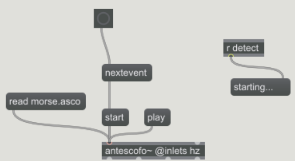

class: center, middle .title[Interactive Music Systems] <br/><br/> .subtitle[Basics of Antescofo] <br/><br/><br/><br/><br/><br/> .date[Nov 2022] <br/><br/><br/> .note[Created with [Liminal](https://github.com/jonathanlilly/liminal) using [Remark.js](http://remarkjs.com/) + [Markdown](https://github.com/adam-p/markdown-here/wiki/Markdown-Cheatsheet) + [KaTeX](https://katex.org)] ??? Author: Grigore Burloiu, UNATC --- name: toc class: left # ★ Table of Contents ★ <!-- omit in toc --> 1. [About the software](#about-the-software) 2. [The `antescofo~` object](#the-antescofo-object) 3. [Basic scofo](#basic-scofo) 4. [Reactive score language](#reactive-score-language) 5. [Custom EVENTs](#custom-events) 6. [Assignment](#assignment) <!-- Comment out the next slide if you don't want the Table of Contents link --> --- layout: true .toc[[★](#toc)] --- name: about-the-software # About the software - [created](https://en.wikipedia.org/wiki/Antescofo) by Arshia Cont in 2007 [at IRCAM](https://youtu.be/I1FoQQtra4o) score following + reactive programming language <iframe width="33%" height="200" src="https://www.youtube.com/embed/c8-qDsE9HEM" title="Jean-Louis Giavitto, José Miguel Fernández (IRCAM) : Workshops on Antescofo" frameborder="0" allow="accelerometer; autoplay; clipboard-write; encrypted-media; gyroscope; picture-in-picture" allowfullscreen></iframe><iframe width="34%" height="200" src="https://www.youtube.com/embed/1AplZg4k4G0" title="Antescofo DEMO — Convergence Lines by Christopher Trapani (mvt 7)" frameborder="0" allow="accelerometer; autoplay; clipboard-write; encrypted-media; gyroscope; picture-in-picture" allowfullscreen></iframe><iframe width="33%" height="200" src="https://www.youtube.com/embed/HSab_znc_y8" title="Antescofo Demo: Boulez' "Anthemes 2"" frameborder="0" allow="accelerometer; autoplay; clipboard-write; encrypted-media; gyroscope; picture-in-picture" allowfullscreen></iframe> -- - [2019 presentation](https://www.hesge.ch/hem/sites/default/files/contributions/presentation_jean-louis_giavitto_colloque_gesture-capture-notation_2019.pdf) by JL Giavitto -- - [the state of Antescofo dev](https://discussion.forum.ircam.fr/t/tutorial-issues-and-antescofo-prospects/25838) - [Antescofo's continuing impact](https://scholar.google.com/scholar?start=20&q=antescofo&hl=en&as_sdt=0,5&as_ylo=2018) --- name: software-setup ## Software setup install [Antescofo](https://forum.ircam.fr/projects/detail/antescofo/) - (windows 32b) [releases](https://forum.ircam.fr/projects/releases/antescofo/) → `Antescofo091-Windows-Max.zip` - for [Max 7 32-bit](https://cycling74.com/downloads/older) - (windows 64b) [v0.8](https://discussion.forum.ircam.fr/t/antescofo-for-windows-10-64-bit/20231/7) - unzip `maxLibs64bit.zip` into `/Documents/Max 8/Packages/antescofo/support` - copy `antescofo.mxe64` into `/Documents/Max 8/Packages/antescofo/externals` install [Sublime Text](https://www.sublimetext.com/) install [Antescofo plugin for Sublime](https://packagecontrol.io/packages/Antescofo) --- name: the-antescofo-object # The `antescofo~` object inlets outlets the help patch calibration tutorials - [language demos](https://youtu.be/ODrl0c-M3dA?list=PLJ-R9Hd3xi4D5x8du-yWZOy8lGNEdgn4a) playlist by Nadir B. - *AscoGraph* --- name: basic-scofo class: center # Basic scofo <img src="../attachments/scofo-basic.png" width = "100%"> --- ## Antescofo scores events - `NOTE`, `CHORD`, `TRILL`, `MULTI`, `EVENT` - can be extracted from audio signals (default), or any other data (setvar)! -- actions - `GROUP`, `LOOP`, … -- automatic [MIDI import](https://antescofo-converter.ircam.fr/) / [instant karaoke :)](https://www.youtube.com/watch?v=gsYhDp2VXMo) --- name: reactive-score-language # Reactive score language ```antescofo NOTE A3 1 Group ONE { curve slider { … } } NOTE B3 1 Group TWO { print A 5 print B } … ``` -- `EVENTS` `NOTE A3 1` -- **Actions** `Group ONE { ... }` -- time / delays / beats --- name: custom-events # Custom EVENTs basic morse code reader - tempo tracking of events!  -- - ...could be a bit smarter. [See](https://antescofo-doc.ircam.fr/) `JUMP, WHENEVER, PATTERNS` --- name: assignment # Assignment explore 2-3 Antescofo tutorials - (not necessarily in order) document & share your progress - (text w/ screenshots, or maxpat+asco files, or video)